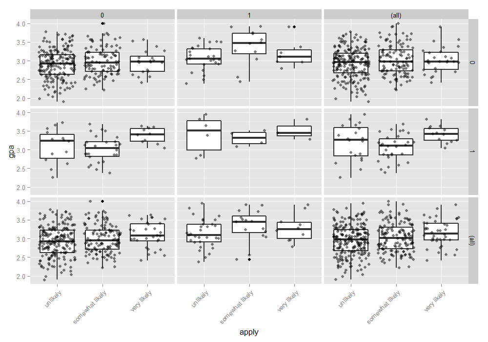
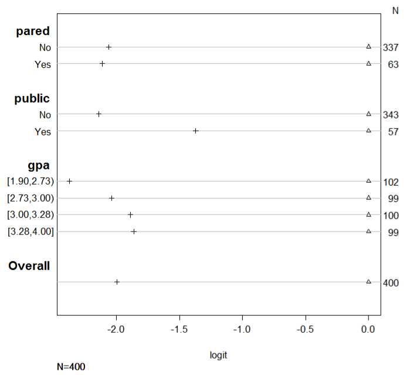
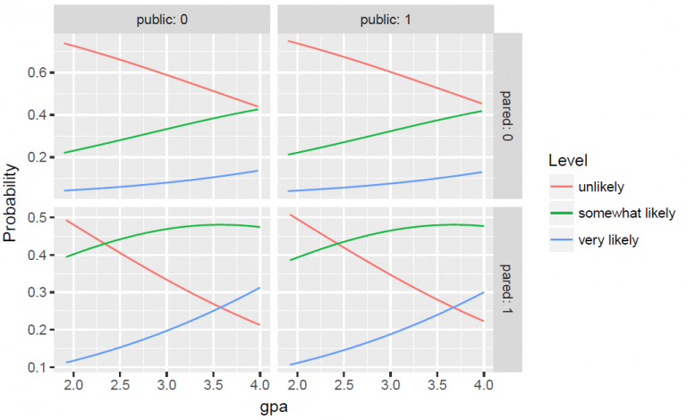

60 Ordinal
Todo
- interpreting scale effects model
- ordinal vignette again, citatation in vignette, google
- “The thresholds are fixed on the scale, but the location of the latent distribution, and therefore also the four areas under the curve, changes with xi”
- diagnostics
- maybe that survival paper
- Harrell’s RMS notes/chapters
- Harrell’s data methods post
- what are profile CIs
- both TDS articles
60.1 Misc
- Notes from
- Analysis of ordinal data with cumulative link models — estimation with the R-package ordinal
- {ordinal} vignette, see below
- Packages
- Cumulative Link Models (CLMs)
- {ordinal}
- CLMs and CLMMs with location, scale and nominal effects (aka partial proportional odds), structured thresholds and flexible link functions
- methods for marginal means, tests of functions of the coefficients, goodness-of-fit tests
- vignette
- *response variable should be an ordered factor class
- Compatible with {marginaleffects}, {emmeans}, {ggeffects}
- {MASS::polr}
- standard CLMs allowing for the 5 standard link functions but no further extensions
- {VGAM::vglm}
- CLMs using the cumulative link; allows for several link functions as well as partial effects.
- {rms::lrm, orm}
- CLMs with the 5 standard link functions but without scale effects, partial or structured thresholds.
- {mvord}:
- An R Package for Fitting Multivariate Ordinal Regression Models
- {ordinalNet}:
- Fits ordinal regression models with elastic net penalty. Supported model families include cumulative probability, stopping ratio, continuation ratio, and adjacent category
- {brms}
- CLMs that include structured thresholds in addition to random-effects.
- {{mord}}
- ordinal classification and prediction focused at machine learning applications
- {ordinal}
- {partykit::ctree}
- takes ordered factors as response vars and handles the rest (see vignette)
- Cumulative Link Models (CLMs)
- xgboost
- objective arg: “rank:pairwise”, “rank:ndcp”, “rank:map”
- something else needs to be done. xgboost::predict returned 0.5 for all values (sliced s1e6)
- Paired data: Use robust cluster sandwich covariance adjustment to allow ordinal regression to work on paired data. (Harrell)
- Ordered probit regression: This is very, very similar to running an ordered logistic regression. The main difference is in the interpretation of the coefficients.
- Sample size: Both ordered logistic and ordered probit, using maximum likelihood estimates, require sufficient sample size. How big is big is a topic of some debate, but they almost always require more cases than OLS regression.
- Harrell summary and comparison of a PO model vs Logistic in the case of an ordinal outcome
.png)
- Formula is an ordinal outcome, Y, with binary treatment variable, Tx, and adjustment variables, X.
- Sometimes researchers tend to collapse an ordinal outcome into a binary outcome. Harrell is showing how using a logistic model is inefficient and lower power than a PO model
- Original is interactive with additional information (link)
- includes: efficiency, infomation used, assumptions, special cases, estimands, misc
60.2 EDA
- Examine distributions of the variables to get an idea of potential relationships
- Crosstabs for ordinal response and categorical explanatory variables
ftable(xtabs(~ public + apply + pared, data = dat))
## pared 0 1
## public apply
## 0 unlikely 175 14
## somewhat likely 98 26
## very likely 20 10
## 1 unlikely 25 6
## somewhat likely 12 4
## very likely 7 3apply is the response variable
Empty cells or small cells: If a cell has very few cases, the model may become unstable or it might not run at all.
Can plot a histogram or compute percentages for each level of the variable
Example: lvl_1% = lvl_1/N = 0.2219, lvl_2% = 0.2488, lvl_3% = 0.25, and lvl_4% = 0.2794
- Skewed and monotonicly increasing
Example
- If distributions of a pre-treatment/baseline (outcome) variable looks substantially different than the (post-treatment) outcome variable, then the treatment likely had an effect
Descriptive stats for numeric explanatory variables
Bi-variate boxplots
- Look for trends of the median
- Example: ordinal vs ordinal
.png)
- No idea what the red/blue splits mean
- Y-Axis: ordinal outcome: 4 levels (y-xis is messed up)
- X-Axis: pre-treatment variable: 7 levels
- Boxes have the counts
- Steady increase in the median
- Makes sense because someone starting w/a higher score (pre-treatment) should mostly end up with a higher score (post-treatment)
- Example: numeric vs ordinal
ggplot(dat, aes(x = apply, y = gpa)) +
geom_boxplot(size = .75) +
geom_jitter(alpha = .5) +
facet_grid(pared ~ public, margins = TRUE) +
theme(axis.text.x = element_text(angle = 45, hjust = 1, vjust = 1))In the lower right hand corner, is the overall relationship between apply and gpa which appears slightly positive.
Pre-intervention means of the outcome by explanatory variables
- Example
CC = 0, TV = 0 2.152
CC = 0, TV = 1 2.087
CC = 1, TV = 0 2.050
CC = 1, TV = 1 1.979- CC and TV are binary explanatory variables
- The mean score of the pre-treatment outcome doesn’t change much given these two explanatory variables.
- I think this shows that for the most part that assignment of the two different treatments was balanced in terms of the scores of the baseline variable.
60.3 Diagnostics
- Deviance: -2*(LogLik Reduced Model - LogLik Saturated model)
- likelihood ratio statistic for the comparison of the full and reduced models
- Reduced model is the model you just fit.
- Can usually be extracted from the model object (e.g. {ordinal}
ll_reduced <- mod$logLik)
- Can usually be extracted from the model object (e.g. {ordinal}
- Saturated model also called the Full model (Also see Regression, Discrete >> Misc)
- The full model has a parameter for each observation and describes the data perfectly while the reduced model provides a more concise description of the data with fewer parameters.
- Usually calculated from the data themselves
data(wine, package = "ordinal")
tab <- with(wine, table(temp:contact, rating))
## Get full log-likelihood (aka saturated model log-likelihood)
pi.hat <- tab / rowSums(tab)
(ll.full <- sum(tab * ifelse(pi.hat > 0, log(pi.hat), 0))) ## -84.01558- GOF: as a rule of thumb, if the deviance about the same size as the difference in the number of parameters (i.e. pfull - preduced), there is NOT evidence of lack of fit. ({ordinal} vignette, pg 14)
- Example (have doubts this is correct)
- Looking at the number of params (“no.par”) for fm1 in Example: {ordinal}, model selection with LR tests below and the model summary in Proportional Odds (PO) >> Example: {ordinal}, response = wine rating (1 to 5 = most bitter), the number of parameters for the reduced model is the number of regression parameters (2) + number of thresholds (4)
- For the full model (aka saturated), the number of thresholds should be the same, and there should be one more regression parameter, an interaction between “temp” and “contact”. So, 7 should be the number of parameters for the full model
- Therefore, for a good-fitting model, the deviance should be close to pfull - preduced = 7 - 6 = 1
- This example uses “number of parameters” which is the phrase in the vignette but I think it’s possible he might mean degrees of freedom (dof) which he immediatedly discusses afterwards. In the LR Test example below, under LR.Stat, which is essentially what deviance is, the number is around 11 which is quite aways from 1. Not exactly an apples to apples comparison, but the size after adding 1 parameter just makes me wonder if dof would match this scale of numbers for deviances better.
- Example (have doubts this is correct)
- Model selection: A difference in deviance between two nested models is identical to the likelihood ratio statistic for the comparison of these models
- see below, Example: {ordinal}, model selection with LR test
- Requirement: Deviance tests are fine if the expected frequencies under the reduced model are not too small and as a general rule they should all be at least five.
- Also see Discrete Analysis notebook
- Residual Deviance: Dresid = Dtotal - Dreduced
- a concept similar to a residual sums of squares (RSS)
- Total Deviance (Dtotal) is the Null Deviance: -2*(LogLik Null Model - LogLik Saturated model)
- analogous to the total sums of squares for linear models
- Dreduced is the calculation of “Deviance” shown above
- See example 7, pg 13 ({ordinal} vignette) for (manual) code
- Example: {ordinal}, model selection with LR tests
fm2 <- clm(rating ~ temp, data = wine)
anova(fm2, fm1)
Likelihood ratio tests of cumulative link models:
formula: link: threshold:
fm2 rating ~ temp logit flexible
fm1 rating ~ temp + contact logit flexible
no.par AIC logLik LR.stat df Pr(>Chisq)
fm2 5 194.03 -92.013
fm1 6 184.98 -86.492 11.043 1 0.0008902 ***For “fm1” model, see Proportional Odds (PO) >> Example {ordinal}, response = wine rating (1 to 5 = most bitter)
Special method for clm objects from the package; produces an Analysis of Deviance (ANODE) table
Adding “contact” produces a better model (pval < 0.05)
Example: {ordinal}, variable LR tests
drop1(fm1, test = "Chi")
rating ~ contact + temp
Df AIC LRT Pr(>Chi)
<none> 184.98
contact 1 194.03 11.043 0.0008902 ***
temp 1 209.91 26.928 2.112e-07 ***
fm0 <- clm(rating ~ 1, data = wine)
add1(fm0, scope = ~ temp + contact, test = "Chi")
Df AIC LRT Pr(>Chi)
<none> 215.44
temp 1 194.03 23.4113 1.308e-06 ***
contact 1 209.91 7.5263 0.00608 **- For “fm1” model, see Proportional Odds (PO) >> Example {ordinal}, response = wine rating (1 to 5 = most bitter)
drop1- Tests the same thing as the Wald tests in the summary except with χ2 instead of t-tests
- i.e. whether the estimates, while controlling for the other variables, differ from 0, except with LR tests.
- In this case, LR tests slightly more significant than the Wald tests
- Tests the same thing as the Wald tests in the summary except with χ2 instead of t-tests
add1- Tests variables where they’re the only explanatory variable in the model
- Both variables still significant even without controlling for the other variable
60.4 Logistic Regression
60.5 Cumulative Link Models (CLM)
A general class of ordinal regression models that include many of the models in this note.
Types
proportional odds model: CLM with a logit link
proportional hazards model - CLM with a log-log link, for grouped survival times
.png)
- link function: log[− log(1 − γ)]
- inverse link: 1 − exp[− exp(η)]
- distribution: Gumbel (min)b (?)
- 1 − γj(xi) is the probability or survival beyond category j given xi .
partial proportional odds - also referred to as unequal slopes, partial effects, and nominal effects
cumulative link mixed models (CLMM) - CLMs with normally distributed random effects
Link functions
.png)
- Note the shape of the distributions of the response (see EDA) to help choose a link function
- See Proportional Odds (PO) >> Example: {ordinal}, weighted complimentary log-log regression, comparing links
- The probit link is often used when the model is interpreted with reference to a latent variable
- Kurtotic, see Statistical Concepts >> Fundamentals >> Kurtosis (i.e. higher sharper peaks w/short tails, flatter peaks w/long tails)
- Default parameter values fit a symmetric heavy tailed distribution (high, sharp peak)
- Note the shape of the distributions of the response (see EDA) to help choose a link function
Model
.png)
- j is the jth ordinal category where j1 < j2 < …
- i is the ith observation
- the regression part xTi β is independent of j, so β has the same effect for each of the J − 1 cumulative logits
- The {θj} parameters provide each cumulative logit (for each j, see below) with its own intercept
- θ is called a “threshold.” See below, Latent Variable Concept
Response variable follows the Multinomial distribution
.png)
- The output is the probability that the response is the jth category or lower.
- πij denotes the probability that the ith observation falls in response category j
Cumulative Logits (Logit Link)
.png)
- j = 1 , … , J - 1 so cumulative logits are defined for all but the last category
- If x represent a treatment variable with two levels (e.g., placebo and treatment), then x2 − x1 = 0 - 1 = -1 and the odds ratio is exp(−βtreatment).
- Similarly the odds ratio of the event Y ≥ j is exp(βtreatment) (i.e. inverse of Y ≤ j).
Latent Variable Concept
- Notes from article
- “To motivate the ordinal regression model, it is often assumed that there is an unobservable latent variable ( y* ) which is related to the actual response through the”threshold concept.” An example of this is when respondents are asked to rate their agreement with a given statement using the categories “Disagree,” “Neutral,” “Agree.” These three options leave no room for any other response, though one can argue that these are three possibilities along a continuous scale of agreement that would also make provision for “Strongly Agree” and “Disagree somewhat.” The ordinal responses captured in y and the latent continuous variable y* are linked through some fixed, but unknown, thresholds.”
- A response occurs in category j (Y = j) if the latent response process y* exceeds the threshold value, θj-1 , but does not exceed the threshold value, θj .
- I think y* is continous on the scale of logits. θjs are also intercepts in the model equations and also on the scale of logits (see Proportional Odds (PO) >> Example: {MASS::polr})
- The cumulative probabilities are given in terms of the cumulative logits with J −1 strictly increasing model thresholds θ1, θ2, … , θJ-1 .
- With J = 4, we would have J −1 = 3 cumulative probabilities, given in terms of 3 thresholds θ1, θ2, and θ3 . The thresholds represent the marginal response probabilities in the J categories.
- Each cumulative logit is a model equation with a threshold for an intercept
- To set the location of the latent variable, it is common to set a threshold to zero. Usually, the first of the threshold parameters (θ1) is set to zero.
- Alternatively, the model intercept (β0) is set to zero and J −1 thresholds are estimated. (Think this is the way {ordinal} does it.)
Structured Thresholds
- If ratings are the response variable, placing restrictions on thresholds and fitting a model allows us to test assumptions on how the judges are using the response scale
- An advantage of applying additional restrictions on the thresholds is model has fewer parameters to estimate which increases model sensitivity.
- Threshold distances are affected by the shape of the latent variable distribution which is determined by the link function used
- i.e. if it’s determined that threshold distances are equidistant under a normal distribution (logit link) assumption, then they will not be equidistant if a different link function is used.
- Example: is the reponse scale being treated by judges as equidistant between values.
- e.g. is the distance between a rating of 2 and a rating of 1 the same as the distance between a rating of 2 and a rating of 3?
- Mathematically: θj − θj−1 = constant for j = 2, …, J−1 where θ are the thresholds and J is the number of levels in the response variable.
- Fit equidistant model
fm.equi <- clm(rating ~ temp + contact, data = wine, threshold = "equidistant")
summary(fm.equi)
link threshold nobs logLik AIC niter max.grad cond.H
logit equidistant 72 -87.86 183.73 5(0) 4.80e-07 3.2e+01
Estimate Std.Error z.value Pr(>|z|)
tempwarm 2.4632 0.5164 4.77 1.84e-06 ***
contactyes 1.5080 0.4712 3.20 0.00137 **
Threshold coefficients:
Estimate Std.Error z.value
threshold.1 -1.0010 0.3978 -2.517
spacing 2.1229 0.2455 8.646spacing: average distance between consecutive thresholds
Compare spacing parameter with your model’s average spacing
mean(diff(coef(fm1)[1:4]))
2.116929“fm1” is from an example in the Proportional Odds (PO) section
Result: “fm1” spacing is very close to “fm.equi” spacing. Judges are likely applying the response scale as having equal distance between rating values.
Does applying threshold restrictions decrease the model’s GOF
anova(fm1, fm.equi)
no.par AIC logLik LR.stat df Pr(>Chisq)
fm.equi 4 183.73 -87.865
fm1 6 184.98 -86.492 2.7454 2 0.2534- No statistical difference in log-likelihoods. Fewer parameters to estimate is better, so keep the equidistant thresholds
60.6 Proportional Odds (PO)
- Misc
- The treatment effect for proportional odds model will be the average of the treatment effects of J-1 logistic regression models where each model is dichotmized at each, but not the last, ordinal level.
- The intercepts in the proportional odds model will be similar to those intercepts from the J-1 logistic regression models
- The intercepts of these logistic models have to be different, but the slopes could (in principle) be the same or same-ish. If they are the same, then the proportional odds assumption holds.
- The proportional odds model has a smaller std.error for its treatment effect than any of the treatment effects of the J-1 logistic regression models (i.e. more accurately estimated in p.o. model)
- The intercepts in the proportional odds model will be similar to those intercepts from the J-1 logistic regression models
- Benefits
- It enforces stochastic ordering (?)
- Lots of choices for link functions.
- Reasonable model for analysing ordinal data
- β will be some sort of appropriately-weighted average of what you’d get for the separate logistic regressions
- The treatment effect for proportional odds model will be the average of the treatment effects of J-1 logistic regression models where each model is dichotmized at each, but not the last, ordinal level.
- Assumption: The independent variable effect is the same for all levels of the ordinal outcome variable
- βs (i.e. treatment effect) are not allowed to vary with j (i.e. response variable levels) or equivalently that the threshold parameters {θj} are not allowed to depend on regression variables
- Example:
- outcome = health_status (1 for poor, 2 for average, 3 for good and 4 for excellent)
- independent variable = family_income (1 for above avg, 0 for below average)
- If the proportional odds assumption holds then:
- The log odds of being at average health from poor health is ‘β1’ if family income increases to above average status.
- The log odds of being at good heath from average health is ‘β1’ if family income increases to above average status.
- The log odds of being at excellent heath from good health is ‘β1’ if family income increases to above average status.
- Testing the assumption
- **Even if the model fails the PO assumption, it can still be useful (see Misc >> Harrell summary and comparison of a PO model vs Logistic…)
- Issues with testing
- Small Sample Sizes: For some variables, you might not have enough power to detect important violations of the PO assumption.
- Large Sample Sizes: For some variables, you will detect small, unimportant violations of the PO assumption and reject a good model.
- Omnidirectional goodness-of-fit tests don’t tell you which variables you should look at for improvements.
- You can test this assumption by fitting a PO model and PPO model. Then, comparing both models via LR Test or using {ordinal::nominal_test} (see below, Partial Proportional Odds (PPO) examples)
- Assess graphically (article, Harrell RMS pg 316)
- 1.) Calculate estimated effects for each explanatory variable in a univariate logistic regression model (e.g. glm(apply ~ pared, family = binomial))
sf <- function(y) {
c('Y>=1' = qlogis(mean(y >= 1)),
'Y>=2' = qlogis(mean(y >= 2)),
'Y>=3' = qlogis(mean(y >= 3)))
}
(s <- with(dat, summary(as.numeric(apply) ~ pared + public + gpa, fun=sf)))
## +-------+-----------+---+----+--------+------+
## | | |N |Y>=1|Y>=2 |Y>=3 |
## +-------+-----------+---+----+--------+------+
## |pared |No |337|Inf |-0.37834|-2.441|
## | |Yes | 63|Inf | 0.76547|-1.347|
## +-------+-----------+---+----+--------+------+
## |public |No |343|Inf |-0.20479|-2.345|
## | |Yes | 57|Inf |-0.17589|-1.548|
## +-------+-----------+---+----+--------+------+
## |gpa |[1.90,2.73)|102|Inf |-0.39730|-2.773|
## | |[2.73,3.00)| 99|Inf |-0.26415|-2.303|
## | |[3.00,3.28)|100|Inf |-0.20067|-2.091|
## | |[3.28,4.00]| 99|Inf | 0.06062|-1.804|
## +-------+-----------+---+----+--------+------+
## |Overall| |400|Inf |-0.20067|-2.197|
## +-------+-----------+---+----+--------+------+For Y ≥ 2 and “pared = no”, -0.37834 is the same as the intercept of the univariate model
For Y ≥ 2 and “pared = yes”, 0.76547 is the same as the intercept + coefficient of the univariate model
2.) For each variable, calculate differences in estimates between levels of the ordinal response
s[, 4] <- s[, 4] - s[, 3]
s[, 3] <- s[, 3] - s[, 3]
s
## +-------+-----------+---+----+----+------+
## | | |N |Y>=1|Y>=2|Y>=3 |
## +-------+-----------+---+----+----+------+
## |pared |No |337|Inf |0 |-2.062|
## | |Yes | 63|Inf |0 |-2.113|
## +-------+-----------+---+----+----+------+
## |public |No |343|Inf |0 |-2.140|
## | |Yes | 57|Inf |0 |-1.372|
## +-------+-----------+---+----+----+------+
## |gpa |[1.90,2.73)|102|Inf |0 |-2.375|
## | |[2.73,3.00)| 99|Inf |0 |-2.038|
## | |[3.00,3.28)|100|Inf |0 |-1.890|
## | |[3.28,4.00]| 99|Inf |0 |-1.864|
## +-------+-----------+---+----+----+------+
## |Overall| |400|Inf |0 |-1.997|
## +-------+-----------+---+----+----+------+For pared, the difference in estimates between Y ≥ 2 and Y ≥ 3 is -2.062 and -2.113. Therefore, it would seem that the PO assumption holds up pretty well for pared
For public, the difference in estimates between Y ≥ 2 and Y ≥ 3 is -2.140 and -1.372. Therefore, it would seem that the PO assumption does NOT hold up for public
If there was a Y ≥ 4, then for pared, the difference in estimates between Y ≥ 3 and Y ≥ 4 should be near 2 as well in order for the PO assumption to hold for that variable.
3.) Plot
plot(s, which=1:3, pch=1:3, xlab='logit', main=' ', xlim=range(s[,3:4]))
- In addition to the PO assumption not seemingly holding for public, there also seems to be some substantial differences between the quantiles of gpa.
- The 3rd and 4th seem to be in agreement, but not the 1st and maybe not the 2nd.
- In addition to the PO assumption not seemingly holding for public, there also seems to be some substantial differences between the quantiles of gpa.
Example: {ordinal}, response = wine rating (1 to 5 = most bitter)
fm1 <- clm(rating ~ contact + temp, data = wine)
summary(fm1)
formula: rating ~ contact + temp
data: wine
link threshold nobs logLik AIC niter max.grad cond.H
logit flexible 72 -86.49 184.98 6(0) 4.01e-12 2.7e+01
Coefficients:
Estimate Std.Error z value Pr(>|z|)
contactyes 1.5278 0.4766 3.205 0.00135 **
tempwarm 2.5031 0.5287 4.735 2.19e-06 ***
---
Signif. codes: 0 ‘***’ 0.001 ‘**’ 0.01 ‘*’ 0.05 ‘.’ 0.1 ‘ ’ 1
Threshold coefficients:
Estimate Std.Error z value
1|2 -1.3444 0.5171 -2.600
2|3 1.2508 0.4379 2.857
3|4 3.4669 0.5978 5.800
4|5 5.0064 0.7309 6.850
confint(fm1)
2.5 % 97.5 %
tempwarm 1.5097627 3.595225
contactyes 0.6157925 2.492404- model: logit(P(Yi ≤ j)) = θj − β1(tempi ) − β2(contacti)
- *response variable should be an ordered factor class
- In this example, both explanatory variables were factor variables.
- “cond.H” - condition number of the Hessian is a measure of how identifiable the model is
- Values larger than 1e4 indicate that the model may be ill defined
- Regression Coefficients
- β1(warm − cold) = 2.50
- The reference level is cold, and this is the effect of moving from cold to warm
- β2(yes − no) = 1.53
- The odds ratio of bitterness being rated in category j or above (OR(Y ≥ j)) is exp(β2(yes − no)) = exp(1.53) = 4.61.
- Note: this is Pr(Y ≥ j) which is why we’re using the positive β
- The reference level is no, and this is the effect of moving from no to yes
- The odds ratio of bitterness being rated in category j or above (OR(Y ≥ j)) is exp(β2(yes − no)) = exp(1.53) = 4.61.
- Interpretation:
- contact and warm temperature both lead to higher probabilities of observations in the high categories
- Me: The odds of the rating being higher are 4.61 times greater when contact = yes than when contact = no.
- β1(warm − cold) = 2.50
- Thresholds (aka intercepts)
- { θj} = {−1.34, 1.25, 3.47, 5.01}
- Often the thresholds are not of primary interest, but they are an integral part of the model. .
- It is not relevant to test whether the thresholds are equal to zero, so no p-values are provided for this test.
- Example: {ordinal}, weighted complimentary log-log regression, comparing links
- data
year pct income
1 1960 6.5 0-3
2 1960 8.2 3-5
3 1960 11.3 5-7
4 1960 23.5 7-10
5 1960 15.6 10-12
6 1960 12.7 12-15
7 1960 22.2 15+
8 1970 4.3 0-3
9 1970 6.0 3-5
10 1970 7.7 5-7
11 1970 13.2 7-10
12 1970 10.5 10-12
13 1970 16.3 12-15
14 1970 42.1 15+“income” (ordered factor) are intervals in thousands of 1973 US dollars
“pct” (numeric) is percent of the population in that income bracket from that particular year
“year” (factor)
Comparing multiple links
> links <- c("logit", "probit", "cloglog", "loglog", "cauchit")
> sapply(links, function(link) {
clm(income ~ year, data=income, weights=pct, link=link)$logLik })
logit probit cloglog loglog cauchit
-353.3589 -353.8036 -352.8980 -355.6028 -352.8434The cauchy distribution has the highest log-likelihood and is therefore the best fit to the data, but is closely followed by the complementary log-log link
Fit the cloglog for interpretation convenience
mod <- clm(income ~ year, data=income, weights=pct, link="cloglog")
summary(mod)
link threshold nobs logLik AIC niter max.grad cond.H
cloglog flexible 200.1 -352.90 719.80 6(0) 1.87e-11 7.8e+01
Estimate Std. Error z value Pr(>|z|)
year1970 0.5679 0.1749 3.247 0.00116 **
Threshold coefficients:
Estimate Std. Error z value
0-3|3-5 -2.645724 0.310948 -8.509
3-5|5-7 -1.765970 0.210267 -8.399
5-7|7-10 -1.141808 0.164710 -6.932
7-10|10-12 -0.398434 0.132125 -3.016
10-12|12-15 0.004931 0.123384 0.040
12-15|15+ 0.418985 0.120193 3.486- ** The uncertainty of parameter estimates depends on the sample size, which is unknown here, so hypothesis tests should not be considered **
- Interpretation
“If p1960(x) is proportion of the population with an income larger than $x in 1960 and p1970(x) is the equivalent in 1970, then approximately”
.png)
So for any income dollar amount, the proportion of the population in 1960 (or 1970 w/some algebra) with that income or greater can be estimated.
- Example: {MASS::polr}, response = apply (3 levels) (article)
m <- polr(apply ~ pared + public + gpa, data = dat, Hess=TRUE)
summary(m)
## Coefficients:
## Value Std. Error t value
## pared 1.0477 0.266 3.942
## public -0.0588 0.298 -0.197
## gpa 0.6159 0.261 2.363
##
## Intercepts:
## Value Std. Error t value
## unlikely|somewhat likely 2.204 0.780 2.827
## somewhat likely|very likely 4.299 0.804 5.345
##
## Residual Deviance: 717.02
## AIC: 727.02Response: “apply” to grad school with levels “unlikely”, “somewhat likely”, and “very likely” (coded 1, 2, and 3)
- The researchers believe there is a greater distance between “somewhat likely” and “very likely” than “somewhat likely” and “unlikely”
- See Cumulative Link Models (CLM) >> Structured Thresholds
- The researchers believe there is a greater distance between “somewhat likely” and “very likely” than “somewhat likely” and “unlikely”
Explanatory:
- “pared” - parent’s education (0/1), graduate school or not
- “public” - public school or not (i.e. private) (0/1)
- “gpa” - numeric
Model
.png)
- equation shows the thresholds (aka cutpoints) as intercepts and the minus sign propugated through the rest of the regression equation
Add p-values to the summary table
## store table
(ctable <- coef(summary(m)))
## calculate and store p values
p <- pnorm(abs(ctable[, "t value"]), lower.tail = FALSE) * 2
## combined table
(ctable <- cbind(ctable, "p value" = p))- CIs:
- profile CIs:
confint(m) - Assuming normality:
confint.default(m)
- profile CIs:
- Interpretation:
- In ordered log odds (aka ordered logits)
- pared: “for a one unit increase in”pared” (i.e., going from 0 to 1), we expect a 1.05 increase in the expected value of “apply” on the log odds scale, given all of the other variables in the model are held constant.”
- gpa: “for one unit increase in”gpa”, we would expect a 0.62 increase in the expected value of “apply” in the log odds scale, given that all of the other variables in the model are held constant
- In odds ratios (aka proportional odds ratios): (w/CIs
exp(cbind(OR = coef(m), ci = confint(m))- This is a proportional odds model so the effect size is the same at all levels of the response variable
- pared:
- “For students whose parents did have a grad degree, the odds of being more likely (i.e., very or somewhat likely versus unlikely) to apply is 2.85 times that of students whose parents did NOT have a grad degree, holding constant all other variables.”
- “For students whose parents did have a grad degress, the odds of being less likely to apply (i.e., unlikely versus somewhat or very likely) is 2.85 times that of students whose parents did NOT have a grad degree, holding constant all other variables.”
- public
- For students in public school, the odds of being more likely (i.e., very or somewhat likely versus unlikely) to apply is 5.71% lower [i.e., (1 -0.943) x 100%] than private school students, holding constant all other variables.
- For students in private school, the odds of being more likely to apply is 1.06 times [i.e., 1/0.943] that of public school students, holding constant all other variables (positive odds ratio).
- For students in private school, the odds of being less likely to apply (i.e., unlikely versus somewhat or very likely) is 5.71% lower than public school students, holding constant all other variables.
- For students in public school, the odds of being less likely to apply is 1.06 times that of private school students, holding constant all other variables (positive odds ratio).
- For students in public school, the odds of being more likely (i.e., very or somewhat likely versus unlikely) to apply is 5.71% lower [i.e., (1 -0.943) x 100%] than private school students, holding constant all other variables.
- gpa
- For every one unit increase in student’s GPA the odds of being more likely to apply (very or somewhat likely versus unlikely) is multiplied 1.85 times (i.e., increases 85%), holding constant all other variables.
- For every one unit decrease in student’s GPA the odds of being less likely to apply (unlikely versus somewhat or very likely) is multiplied 1.85 times, holding constant all other variables.
- Predictions:
predict(m, data = newdat, type = "probs") - Plot Predictions

- In ordered log odds (aka ordered logits)
newdat <- cbind(newdat, predict(m, newdat, type = "probs"))
lnewdat <- melt(newdat, id.vars = c("pared", "public", "gpa"),
variable.name = "Level", value.name="Probability")
ggplot(lnewdat, aes(x = gpa, y = Probability, colour = Level)) +
geom_line() + facet_grid(pared ~ public, labeller="label_both")60.7 Partial Proportional Odds (PPO)
- βs are allowed to vary with j (ordinal outcome levels) or equivalently, the threshold parameters {θj} are allowed to depend on regression variables.
- Two sets of thresholds are applied at conditions with and without an explanatory variable
- Example: {ordinal}, PPO for “contact”
fm.nom <- clm(rating ~ temp, nominal = ~ contact, data = wine)
summary(fm.nom)
link threshold nobs logLik AIC niter max.grad cond.H
logit flexible 72 -86.21 190.42 6(0) 1.64e-10 4.8e+01
Estimate Std.Error z.value Pr(>|z|)
tempwarm 2.519 0.535 4.708 2.5e-06 ***
Threshold coefficients:
Estimate Std.Error z.value
1|2.(Intercept) -1.3230 0.5623 -2.353
2|3.(Intercept) 1.2464 0.4748 2.625
3|4.(Intercept) 3.5500 0.6560 5.411
4|5.(Intercept) 4.6602 0.8604 5.416
1|2.contactyes -1.6151 1.1618 -1.390
2|3.contactyes -1.5116 0.5906 -2.559
3|4.contactyes -1.6748 0.6488 -2.581
4|5.contactyes -1.0506 0.8965 -1.172- model: logit(P(Yi ≤ j)) = θj + β˜j (contacti) − β(tempi)
- Two sets of thresholds are applied at conditions with (yes) and without (no) “contact”
- Response variable should be an ordered factor class
- In this example, both explanatory variables were factor variables.
- It is not possible to estimate both β2(contacti) and β˜j(contacti) in the same model. Consequently variables that appear in “nominal” cannot enter in the formula as well
- Results
- βˆ(warm − cold) = 2.52
- The reference level is cold, and this is the effect of moving from cold to warm
- { ˆθj} = {−1.32, 1.25, 3.55, 4.66}
- {βˆ˜j (yes − no){style=‘color: #990000’}} = {−1.62, − 1.51, − 1.67, − 1.05}
- βˆ(warm − cold) = 2.52
- The odds ratio of bitterness being rated in category j or above (OR(Y ≥ j)) now vary with j:
- ORs = {exp(−β ˆ˜ j (yes− no)){style=‘color: #990000’}} = exp{-(-1.6151), -(-1.5116), -(-1.6748), -(-1.0506){style=‘color: #990000’}} = {5.03, 4.53, 5.34, 2.86}
- Me: The odds of the rating being greater or equal to 2 are 4.53 times greater when contact = yes than when contact = no.
- Example: {ordinal}, Test the PO assumption for 1 variable w/LR Test
anova(fm1, fm.nom)
formula: nominal: link: threshold:
fm1 rating ~ temp + contact ~1 logit flexible
fm.nom rating ~ temp ~contact logit flexible
no.par AIC logLik LR.stat df Pr(>Chisq)
fm1 6 184.98 -86.492
fm.nom 9 190.42 -86.209 0.5667 3 0.904“fm1” model from example in Proportional Odds section, but the “formula” column in the summary tells you what variables are in it.
There is only little difference in the log-likelihoods of the two models and the test is insignificant (pval < 0.05). Thus there is no evidence that the proportional odds assumption is violated for contact.
Example: {ordinal}, Test the PO assumption for all variables w/LR Test
nominal_test(fm1)
Df logLik AIC LRT Pr(>Chi)
<none> -86.492 184.98
temp 3 -84.904 187.81 3.1750 0.3654
contact 3 -86.209 190.42 0.5667 0.9040- Behavior of this function is similar to the
anovaexample above except the action is taken with every variable in the formula- If any variables are in the “scale” argument, they are also tested.
- Note that “contact” has the same LRT, pval as the previous example
- No pvals < 0.05, therefore no violations of the PO assumption for any variable.
60.8 Scale Effects
- An alternative to nominal effects (partial proportional odds) when nonproportional odds structures are encountered in the data.
- Using scale effects is often a better approach, and it uses fewer parameters which often lead to more sensitive tests than nominal effects
- Something about allowing the scale parameter of the latent variable distribution to depend on explanatory variables.
- latent distribution is determined by the choice of link function
- Example: {ordinal}, allow scale to vary according to a variable
fm.sca <- clm(rating ~ temp + contact, scale = ~ temp, data = wine)
summary(fm.sca)
link threshold nobs logLik AIC niter max.grad cond.H
logit flexible 72 -86.44 186.88 8(0) 5.25e-09 1.0e+02
Estimate Std.Error z.value Pr(>|z|)
tempwarm 2.6294 0.6860 3.833 0.000127 ***
contactyes 1.5878 0.5301 2.995 0.002743 **
log-scale coefficients:
Estimate Std.Error z.value Pr(>|z|)
tempwarm 0.09536 0.29414 0.324 0.746
Threshold coefficients:
Estimate Std.Error z value
1|2 -1.3520 0.5223 -2.588
2|3 1.2730 0.4533 2.808
3|4 3.6170 0.7774 4.653
4|5 5.2982 1.2027 4.405Model
.png)
- Scale parameter of the latent variable distribution varies by “temp”
- The scale term in the denominator. See Cumulative Link Models (CLM) >> model for more details on this term
- Location parameter of the latent distribution is allowed to depend on both “temp” and “contact”
- The location expression is the numerator
- Scale parameter of the latent variable distribution varies by “temp”
Response variable should be an ordered factor class
- In this example, both explanatory variables were factor variables.
Results
- Little to no idea what any of this practically means
- The location of the latent distribution is shifted 2.63σ (scale units) when temperature is warm as compared to cold conditions and 1.59σ when there’s presence (yes) of contact as compared to absence (no) of contact. (reference levels: temp: cold, contact: no)
- The scale of the latent distribution is σ at cold conditions but σ ∗ exp(ζ(warm−cold)) = σ ⨯ exp(0.095) = 1.10σ , i.e., 10% higher, at warm conditions.
- The p value for the scale effect in the summary output shows that the ratio of scales is not significantly different from 1 (or equivalently that the difference on the log-scale is not different from 0).
Example: Detect scale effects of variables
scale_test(fm1)
Df logLik AIC LRT Pr(>Chi)
<none> -86.492 184.98
temp 1 -86.439 186.88 0.10492 0.7460
contact 1 -86.355 186.71 0.27330 0.6011- “fm1” comes from example in Proportional Odds (PO) section
- Function has similar behavior to
nominal_test(see example in Partial Proportional Odds (PPO) section) - No pvals < 0.05, therefore no evidence of scale effects for any variable.